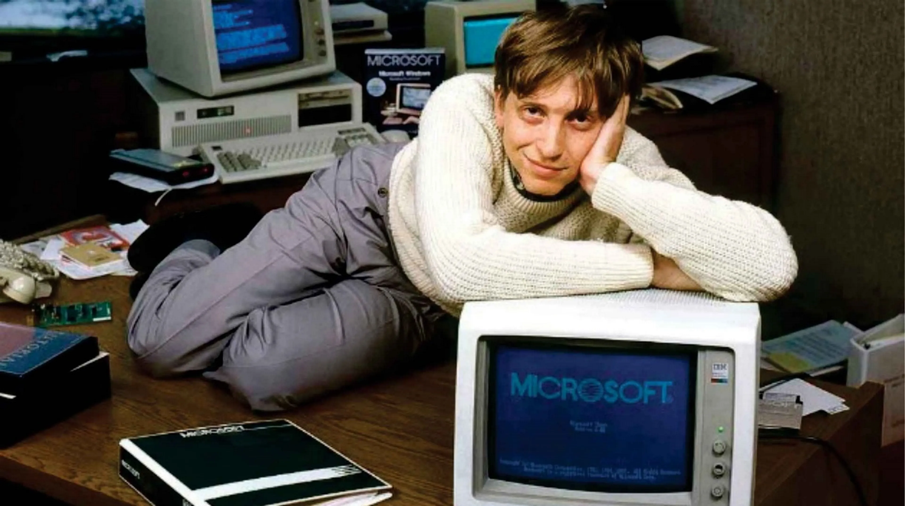
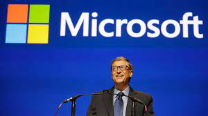
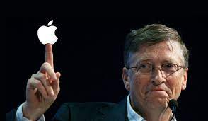

MS - DOS
En 1975, con el boom comercial provocado por el Altair 8800 de MITS, Gates entendió que el precio de los ordenadores caería rápidamente. En el año 1980, IBM buscaba un sistema operativo propio para que sus flamantes PC pudieran competir con los equipos de Apple. Al igual que ocurriera anteriormente, Gates les vendió algo que aún no tenía, pero se las ingenió para adquirir los derechos del prometedor QDOS. Tras adaptarlo a las especificaciones de su prometedor cliente, que quedaron encantados con él. Había nacido el MS-DOS
Microsoft Windows
Bill, sacó al mercado una interfaz para el MS-DOS, que actualmente conocemos como Windows: Windows 3.0 en el año 1990 y Windows 3.1 en el año 1992. Luego de esto el Windows fue evolucionando, salió el Windows 95, posteriormente Windows 98, Windows XP el primer sistema operativo distinto totalmente al original MS-DOS. Microsoft crecio a tal punto, que los 1200 empleado con los que contaban en el año 1986, llegaron a tener más de 20000 en el año 1996. Y así continuo con el efervescente crecimiento y evolución de Windows hasta la gran empresa que conocemos hoy.
Salvación de Apple
Aunque su relación con Steve Jobs no era demasiado buena, el Mac recibió una serie de aplicaciones que había producido Microsoft y que ahorraron tiempo y esfuerzo a los programadores de Apple.
En el año 1997, Bill Gates invirtió 150 millones de dólares en acciones a voto de Apple cuando esta última estaba a punto de quebrar. La participación terminó en 2003, cuando Microsoft vendió sus participaciones por 350 millones de dólares. A día de hoy tendrían un valor de 10.350 mil millones de dólares.